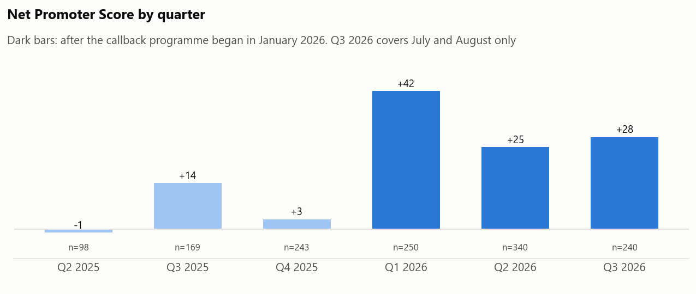
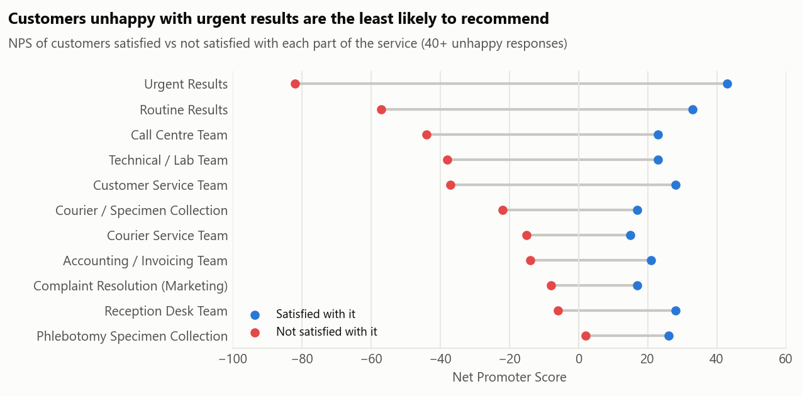

Turning customer feedback into action
A pipeline and dashboard that turn customer survey responses into scores, themes and a callback list for the customer-relations team.
This page uses synthetic data: 1,350 invented responses for a fictional lab network. The real version runs every day on real responses, which can’t be published.
The problem
The lab collects customer feedback through an online form: how likely people are to recommend it (0 to 10), how they rated each part of the service, and what went wrong.
The raw responses are messy. The same branch is typed many different ways, comments are full of "Nil" and "N/A", and some people leave their phone number in a comment. The old dashboard had numbers that were easy to misread, and nothing told staff which unhappy customers to call back.
What I did
- Built a pipeline that cleans each new batch of responses automatically, matches every way of typing a branch name to the right branch, and sorts comments into themes such as delays, communication and billing.
- Worked out the Net Promoter Score (the share of customers who would recommend the lab minus the share who wouldn’t) for every branch, month and type of customer.
- Created a ranked callback list of unhappy customers who asked to be contacted. It stays on the team’s computer and is never published.
- Added a safety check that stops the dashboard being published if any personal contact details would appear on it.
What I found
The callback programme worked

The score was +6 before January 2026, when the network started texting results and calling back unhappy customers, and +31 afterwards. Complaints about the call centre dropped from 17.6% to 5.8% of the customers who used it.
Slow urgent results hurt the most

Customers who were unhappy with their urgent results gave a score of −82, against +43 from those who were happy with them. Six in ten of all unhappy customers were unhappy with urgent results, and delays are the most common theme in written comments.
One branch and one customer group need attention
Ikorodu has the lowest score (+5); its customers were unhappy with urgent results twice as often as at other branches. Clinics that send samples in score the lab at +6, against +33 from walk-in patients.
A headline number that wasn’t what it seemed
The form says 66% of complaints were "adequately addressed". But half of those "Yes" answers came from people who had nothing to complain about. Among customers who actually had a complaint, 51% said it was addressed, up from 40% to 59% after the callback programme.
What it means
My recommendation: fix urgent-results turnaround at Ikorodu first, keep the callback programme running, and only ask "was your complaint addressed?" to people who actually had a complaint, so the resolution figure is real.
For technical readers
Node.js (SheetJS, Chart.js) for the pipeline and dashboard; Python (pandas, matplotlib) for the synthetic data and analysis